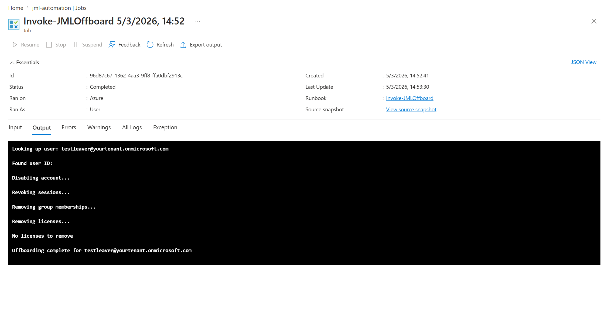

My identity automation lab
Access changes.
Automation follows.
Automated Identity Lifecycle Lab
I started with manual onboarding, role changes, and offboarding in Microsoft Entra ID. Then I built a pipeline that takes a simulated termination event through Logic Apps, Azure Automation, and Microsoft Graph.
Do this lab yourselfFollow my step-by-step walkthrough →Microsoft Entra ID · Logic Apps · Azure Automation · Microsoft Graph · PowerShell
Explore my evidence

Select a view above. Click the image to inspect it at full size.
Behind the project
What I built.
Why it matters.
Explore the setup, decisions, and work documented in this project.
What I built
An HTTP trigger calls an Azure Automation runbook to disable an account, revoke sessions, remove group memberships, and process license removal. A managed identity handles authentication.
What I validated
My lab write up documents testing the Logic App, checking runbook output, reviewing the disabled account and group memberships, and checking audit logs and the completion notification.
What the screenshots show
The completed runbook job records the offboarding actions. In the shown test, there were no licenses to remove. The other screenshots show the trigger, script, and Graph permissions.